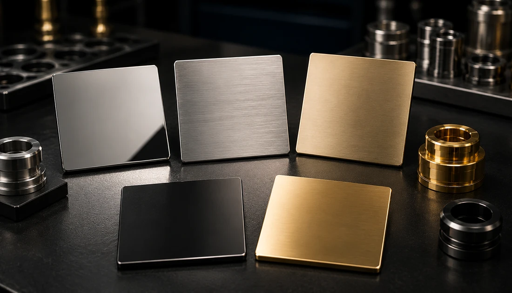

عکس، جنس، تعداد و فینیش هدف را ابتدا ارسال کنید تا تناسب اولیه پروژه با خدمت مشخص شود.
پوشش PVD تزئینی و لوکس در تهران
هماهنگی منطقهای
مسیر واقعی همکاری برای پروژههای تهران
صفحه محلی برای شفافکردن مسیر همکاری است، نه ایجاد ادعای شعبه یا خط مستقل در شهر.
این صفحات محدوده خدمترسانی را توضیح میدهند؛ اجرای فرآیند با هماهنگی کارگاه اندیشه انجام میشود.
برای فینیش حساس، رنگ/براقیت و معیار پذیرش را با مرجع یا نمونه پیش از تیراژ مشخص کنید.
پروژههای تهران
تهران بهدلیل حجم بالای پروژههای ساختمانی و دکوراتیو، سهم قابلتوجهی از استعلامهای پوشش PVD (بهخصوص شیرآلات و یراقآلات لوکس) را به خود اختصاص میدهد. کارگاه اندیشه در غرب تهران قرار دارد و هماهنگی ارسال و دریافت قطعه برای مناطق مختلف تهران با تماس یا واتساپ انجام میشود.
چرا PVD برای کارهای لوکس؟
- ظاهر یکنواخت و فینیش تمیز (براق یا مات)
- در صورت انتخاب زیرسازی و ساختار مناسب، میتوان مقاومت سطحی و پایداری فینیش را متناسب با کاربرد هدفگذاری کرد.
- قابلیت اجرای رنگهای محبوب: طلایی، رزگلد، دودی، مشکی، نقرهای

کاربردهای رایج در بازار دکوراتیو
شیرآلات و اکسسوری سرویس بهداشتی
یراقآلات کابینت و درب (دستگیره، لولا، قفل و …)
قطعات دکوراتیو فلزی برای معماری داخلی
تزئینات لوکس، قابها، قطعات سفارشی و سریکاری
پالت رنگ و فینیش
انتخاب نهایی رنگ، به جنس قطعه و آمادهسازی سطح وابسته است. برای پروژههای حساس، نمونهسازی توصیه میشود.
طلاییبراق
رزگلدبراق
دودیمات
مشکیمات
نقرهایبراق
نمونه کارها
منتخبی از پروژههای انجام شده
فرآیند سفارش برای پروژههای لوکس
1
ارسال عکس/ابعاد/جنس قطعه و رنگ مدنظر
2
بررسی آمادهسازی سطح (پولیش، تمیزکاری، زیرلایه در صورت نیاز)
3
نمونهسازی رنگ و تایید نهایی (برای کارهای سری یا حساس)
4
اجرای پوشش و کنترل کیفیت ظاهری/چسبندگی
پرسشهای متداول PVD تزئینی
آیا PVD برای شیرآلات و فضای مرطوب مناسب است؟
در بسیاری از کاربردهای دکوراتیو، PVD انتخاب رایجی است؛ اما نتیجه نهایی به جنس قطعه، آمادهسازی سطح و شرایط استفاده بستگی دارد. برای کارهای حساس، پیشنهاد میکنیم نمونهسازی انجام شود.
طلایی و رزگلد با براق/مات چه تفاوتی دارد؟
فینیش براق بازتاب بیشتری دارد و جلوه لوکستری میدهد؛ فینیش مات اثر انگشت و انعکاس را کمتر نشان میدهد و برای فضاهای پرتردد مناسبتر است.
چه چیزی باعث تفاوت رنگ بین دو قطعه میشود؟
اختلاف در جنس زیرکار، میزان پولیش/زبری سطح، تمیزی قبل از پوشش و حتی هندسه قطعه میتواند ظاهر نهایی را تغییر دهد. هماهنگسازی با نمونه مرجع کمک زیادی میکند.
برای سفارش چه اطلاعاتی لازم است؟
تعداد، جنس قطعه، ابعاد، رنگ/فینیش مدنظر و در صورت امکان عکس یا نمونه. اگر قطعه قبلاً پوشش داشته، نوع پوشش قبلی هم مهم است.
استعلام قیمت و زمان تحویل
برای برآورد دقیق، لطفاً تعداد، جنس، ابعاد و رنگ مدنظر را ارسال کنید.
تماس و ثبت درخواستخدمات در تهران
برای ثبت درخواست از تهران، کافی است مشخصات قطعه، تعداد و فینیش موردنظر را ارسال کنید تا زمانبندی و شرایط تحویل با هماهنگی تعیین شود.
- مشاوره برای انتخاب رنگ/فینیش متناسب با کاربرد و شرایط نگهداری
- امکان ارسال نمونه برای تست رنگ و کیفیت قبل از سفارش اصلی
- هماهنگی دریافت/ارسال سفارش و پیگیری وضعیت انجام کار
شفافیت تجاری
قیمت و زمان نهایی بعد از روشنشدن دامنه پروژه تأیید میشود
استعلام بر اساس قطعه واقعی، وضعیت سطح، تیراژ و مسیر فرایند همان پروژه جمعبندی میشود. برای بررسی فنی از Project Brief استفاده کنید و اگر عکس یا مرجع فینیش سریعتر مسئله را روشن میکند، آن را در واتساپ بفرستید.
01بررسی فنی
جنس، وضعیت فعلی سطح، ابعاد، تیراژ و فینیش هدف مبنای بررسی اولیهاند.
02مرجع بصری
در صورت نیاز، عکس واضح قطعه یا نمونه فینیش را از طریق واتساپ ارسال کنید.
03ساعات کارگاه
شنبه تا چهارشنبه ۷–۱۷ · پنجشنبه ۷–۱۳.
استعلام قیمت و زمان تحویل
برای استعلام دقیق، عکس قطعه/مشخصات را ارسال کنید یا تماس بگیرید.